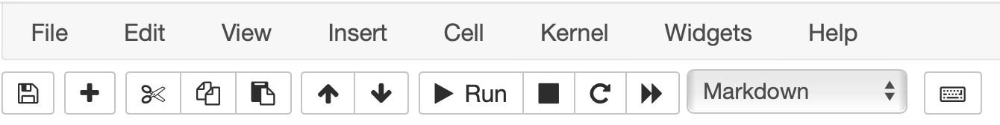
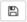
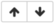
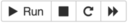
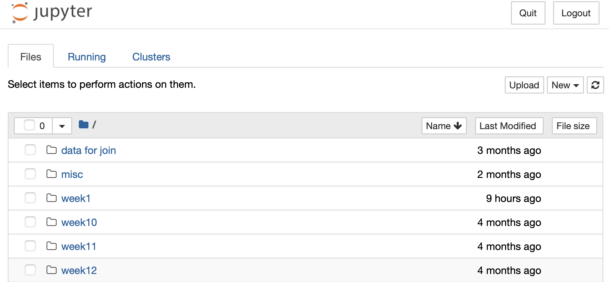
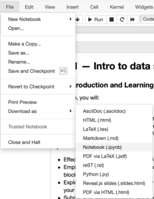
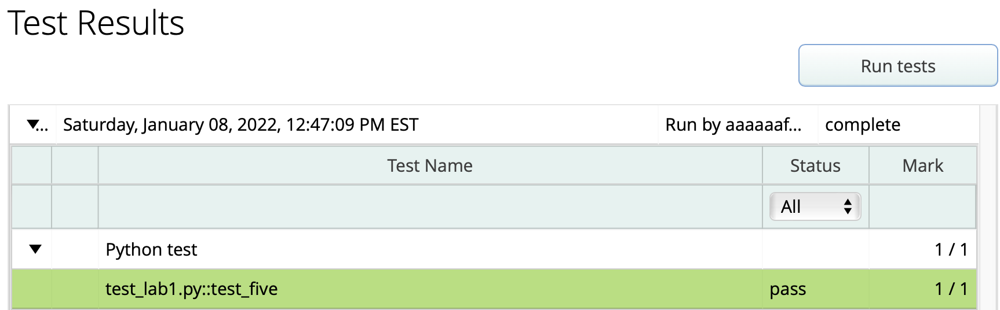

GGR274 Lab 1: Intro to Data Science Tools#
FIRST STEP: open this notebook in JupyterHub!#
Before doing anything else, please open this notebook in JupyterHub by clicking on the “Rocket ship” icon at the top of this page, and selecting “JupyterHub”.
Lab Introduction and Learning Objectives#
In this lab, you will:
Explore the features and interface of a Jupyter Notebook in JupyterHub
Discover the features and differences between Python and Markdown
View and open files in your JupyterHub account
Create and format both Python and Markdown
By the end of the lab, you will be able to:
Effectively navigate the interface of Jupyter notebooks
Employ different notebook features to create, edit, format, rearrange, and manipulate Python and Markdown blocks
Explore your JupyterHub account by navigating through the directory structor, and attach/embed files and links in your notebook
Submit your work (and future work) to MarkUs
If you get stuck, ask your TA for help!
Logistics#
Your lab grade will be based on attendance and submission of a few small tasks (see Task-1A and Task-1B below) to MarkUs during the lab session (or by 23:59 of the day of your lab).
Complete the tasks in this Jupyter notebook and check your work on MarkUs. Instructions on how to upload this Jupyter notebook to MarkUs are in the upload to MarkUs section below.
We have set up autograding on MarkUs to give you automated feedback on these lab exercises to help make sure you’re on track and ready for this week’s homework, so take advantage of it!
To submit your work on MarkUs for autograding:
Download this file (
Lab_1.ipynb) from JupyterHub. (See our JupyterHub Guide for detailed instructions.)Submit this file to MarkUs under the lab01 assignment. (See our MarkUs Guide for detailed instructions.)
Run the autograding for this lab on MarkUs and view the results. You can resubmit to MarkUs and re-run the autograder as many times as you like. (See our MarkUs Guide for detailed instructions.)
What is JupyterHub Notebook?#
The tool you’re currently using to read this document is called a Jupyter Notebook, and you will be using this to complete labs and homeworks throughout the course as you write, document, and edit Python code to examine and work with data. You can also embed text and plots in notebooks, which makes it a great medium for combining code and analysis. JupyterHub is the server on which we store Jupyter Notebooks.
Much like having to learn how to use a lab for a chemistry course, you will need to learn how to use data science equipment; JupyterHub and Jupyter notebooks are important data science lab tools. This first lab will take you on a tour of this Jupyter notebook.
Without further ado, let’s explore.
Cells#
A Jupyter notebook page has cells that contain a Python program or formatted text. Each of the sections so far has been in a separate cell. You’ll learn how to create both kinds of cells and, soon, how to make useful graphs from data using Python.
Some cells are “rich text”, like this one — bold text and large titles and so on. That’s Markdown, which is a markup language. We’ll start to explore that in the next cell.
Some cells are code cells. You’ll type Python code to do data science, then you’ll run (and debug) it.
Markdown#
Jupyter notebooks allow you to edit code and text in one file, structured in ‘blocks’. Within a block, you can either run and edit code or rich text, but not both.
Double-click on this sentence. It changes the cell to a text editor. To go back to the first view, click the Run button above, as seen in the Control Panel diagram below.
Notice that the drop-down button says Markdown. Markdown is the format this cell is written in. You’ll learn how to use Markdown over the coming weeks.
Your web browser is showing you the JupyterHub@UofT website. That’s where your files, including this JupyterHub notebook, are stored. You are using your very own virtual computer running there, and only you have access to your files.
Control Panel#
Let’s get acquainted with the Jupyter notebook control panel. We will explore only the toolbar buttons, but feel free to explore the drop down menus (ex. ‘File’, ‘Edit’, …)
 Fig 1.1 - The control panel of the Jupyter Notebook
 Fig 1.2 - The Save button
The left-most button is probably something you are already familiar with - the “Save” button. This is pretty self-explanatory, clicking on this will save all changes since your last save.
 Fig 1.3 - Creating New Cells
The “plus” button creates a new cell below the currently selected cell. By default, JupyterHub will create a code block. We’ll revisit types of code blocks soon.
Fig 1.3 - Creating New Cells
The “plus” button creates a new cell below the currently selected cell. By default, JupyterHub will create a code block. We’ll revisit types of code blocks soon.
Fig 1.4 - Cut, Copy, and Paste Cells The next three buttons are the cut, copy, and paste buttons, specifically for cells (i.e. it will perform the operation for the entire cell, but you can always highlight code/text and use your normal copy/paste/cut keyboard shortcuts)
 Fig 1.5 - Rearrange Cells The Up and Down buttons move (or swap) the position with the cell directly above or below it, respectively.
 Fig 1.6 - Run, Stop, Restart, and Run All Cells For a Markdown cell, the Run button will show the rich text view. For a Code cell, it will execute the code.
Sometimes, code takes a while to run, which might not be intended behaviour. In this case, we can use the Stop button to terminate code execution. Refresh resets all the Code cells in the notebook. The Fast Forward button first resets all the Code cells and then runs all of them in order, starting at the top.
Fig 1.7 - Specify Block Type Perhaps one of the more important functions, this dropdown menu lets you set the type of block you want (Markdown for text, Code for Python code).
Task: view your JupyterHub files and folders#
Throughout the labs and homeworks, you will have tasks to do. Each cell containing a task will be labelled like this one.
The program your web browser is running is talking to the JupyterHub@UofT website. That’s where your files, including this Jupyter notebook, are stored. You are using your very own virtual computer running there, and only you have access to your files.
To see all of your files on JupyterHub:
Open a new tab in your web browser.
Go to https://juypter.utoronto.ca.
When you access your local files via JupyterHub, your interface will look something like this:
 Fig 1.8 - Our local files and directories as seen via JupyterHub (Note: you’ll have different files!)
When you’re done poking around, come back here.
Task: edit a Markdown cell to learn some formatting tricks#
We use hashtags (#) to create titles and headings. Particularly, the fewer the hashtags, the larger the text. So we use ‘#’ to create our titles, then ‘##’ or ‘###’ or ‘####’, etc. to make our headings and sub-headings. Double click to open the Markdown editor to see how these are specified
Sub-heading#
sub-sub headings#
sub-sub-sub heading (do we really need more than 3?)#
Markdown supports some rich text features, such as bolding, italics, and lists:
BOLD text is ‘wrapped’ by two opening and two closing underscores or by surrounding with two asterisks.
Same for italics! or, with a single asterisk, italics, perhaps?
Let’s
make
a
hey
it’s a nested list!
list
You can use +, -, >, and * for lists. Which ones you use doesn’t matter. To make a nested list, indent the sublist. Data scientists typically switch to a different list character when they indent.
If you indent plain text, it appears in fixed-width font. Nice for showing a line of Python code, or maybe some data.
You can also include Python code with pretty syntax highlighting. You’ll be working with Python on the homework this week, so just enjoy the experience for now.
# This is Python code.
x = 5
Text inside backticks is also rendered fixed width.
Double click on this cell to see how these are all specified in Markdown. Feel free to edit them to play around, and click Run to see how it renders.
Embedding images#
It’s fun and straightforward to embed images from the web. In this case, we will need to know the URL of the image. Go find your favourite cat picture and get the URL, or use this one if you can’t decide:
https://images.pexels.com/photos/2061057/pexels-photo-2061057.jpeg
We need to specify a title for the image, followed by the file path (computer location) of the image. We start by adding an exclamation mark, followed by square brackets which wrap an image title of our choosing. Then, in round brackets, we specify the location of the URL.
Task: say aww#
The Markdown to show an image looks like this:

Notice that line is indented, so it appears in fixed width font. Un-indent it: delete the spaces before the !, then Run the cell to see the image. You are welcome to use your own image URL.
Task: See what a link to a webpage looks like#
You’ll often want to add links to other webpages, especially once you’ve started working on your project. It looks just like embedding an image, but you leave off the initial exclamation mark. Double-click this cell to see what it looks like.
{kind=link}
Task: create your own Markdown and Code cells#
You can create your own cells. Click on this cell to select it (it should be highlighted compared to the other cells), then click the + button in the button bar above. This creates a Code cell by default.
To change its type, click the cell and then click the drop-down menu where it says Code. Make it a Markdown cell, type anything you like in it, then click Run.
Task: save your work!#
The Jupyter notebook you are interacting with right now is saved as a file on your JupyterHub virtual computer. It has a .ipynb extension.
Make sure you save frequently by clicking the floppy disk icon in the button bar. Please do so now.
Select and move multiple cells#
You can swap the order of a cell by clicking on it and then clicking the up and down arrows in the button bar.
You can select a sequence of cells by clicking the first cell you want, then holding down your shift key and clicking the last cell in the sequence. The up and down arrows move all of them at once.
You don’t have to do this as a task, but you’re welcome to try it!
Task 1A#
Some tasks are labeled with a week number and a letter, like this one. These will be required to get your lab participation mark. This task is your first graded (submitted/not submitted) piece of work in the course! The “1” is the week number, and the “A” is used to identify the task within week 1.
Create a Markdown cell below this cell. In your cell, add a heading titled Task 1A answer (any heading level is fine). We will look for this title when we mark.
In the new cell:
write a sentence or two describing something interesting you learned in this course this week.
Add a favourite image, meme or GIF.
Finally, add a link to the course syllabus on Quercus.
Task 1B#
Now, create a new Code cell below this cell. In it, write the following two lines of Python code:
five = 3 + 2
five * five
You can copy and paste if you like. When you run the cell, should should see 25 as an Out cell below it.
What happened?
Line 1: First, Python added 3 and 2, getting the value 5. Then Python gave that value a name, five.
Line 2: five is a name for the value 5, so Python does 5 * 5, getting 25.
The Out line shows the output from the last expression in the Code cell. You’ll learn how to control what gets displayed later.
Task: download this notebook#
Each week, you will submit notebooks from JupyterHub to MarkUs for grading.
Download this Jupyter notebook file to your computer:
File —> Download as —> Notebook (.ipynb).

WARNING: if you download twice, you need to rename the file#
If you download a second time, you’ll get a new file with a number appended. “Lab_1-1.ipynb” is used the second time you download, then “Lab_1-2.ipynb”, and so on. Before you submit, you need to:
Delete the old “Lab_1.ipynb” download.
Rename your “Lab_1-1.ipynb” to “Lab_1.ipynb”.
Task: upload to MarkUs#
Log in here: https://markus-ds.teach.cs.toronto.edu (Tip: Control/Command-click to open it in a new tab so you can still see these instructions.)
Choose the
GGR274-2024-01course.Click the
lab01: Lab week 1assessment.Click the
Submissionstab. The new page islab1: Submissions.Click button
Upload Fileon the bottom right.Click button
Choose Files.Select the
Lab_1.ipynbfile that you downloaded in the previous task, then clickSave.
You just submitted your lab 1 notebook!
Task: run the automated tests#
We have an automated test that checks whether you’ve assigned the value 5 to variable five in your notebook, and you can (and should) run this test.
Click the
Automated Testingtab.Click button
Run testsand wait several seconds while the test is run.Reload the webpage. Hopefully you see something like this. If not, and you can’t figure it out, ask for help!
